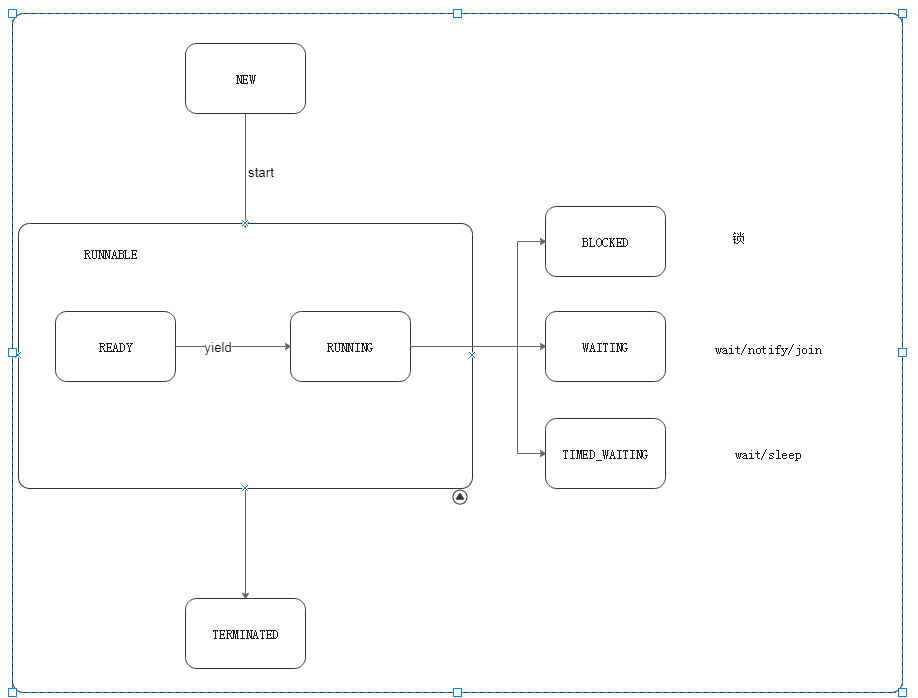

#线程#
##线程的生命周期状态##

##创建线程的方法##
- 继承Thread类并重写run方法
- 实现Runnable接口
- 实现Callable接口(带返回值的线程)
##线程常用方法## - run
- start
- join
- yield
- sleep
- stop（Deprecated）
- suspend（Deprecated）
- resume（Deprecated）
##多线程的优势和风险##
优势
- 提高系统吞吐率
- 提高响应性
- 充分利用多核
风险
- 线程安全
- 上下文切换
- 可靠性
##线程安全问题##
原子性
解决方案： 1 锁 （synchronized lock）
2 CAS可见性
解决方案： Volitile
有序性
解决方案： Volitile(禁止指令重排)
#线程同步#
Java中的锁可分为两类:一类是内部锁，由Java提供的关键字synchronized实现，另一类是JUC包中的Lock接口，可提供各种灵活的锁操作。Java中的锁都是互斥的。
Synchronized
在早期的Java对于Synchronized的实现中，需要涉及到用户态到内核态的切换，因此该锁又被称为重量级锁，随着JDK的不断优化，synchronized也不断升级。一般来说，锁的升级过程可大致如下:
作为锁的句柄变量通常使用private final关键词修饰，因为synchronized上锁的本质上是在对象(堆内存)上锁，所以如果修改了句柄指向的对象，那么实际上是两把锁，所以一般用private final关键词修饰。锁信息维护在对象的markword上
使用Synchronized可以同步方法，也可以同步代码块，两者锁住的都是当前对象，一般来说，推荐使用锁住同步代码块的方式，因为锁住的部分代码越少，整体的运行效率就会更高。除此之外，Synchronized也可以锁住Class对象，那么上锁的将不是实例对象，而是class对象。
synchronized本身是可重入的锁。如何理解这句话呢？因为synchronized的实现是在上锁对象头的markword上维护锁信息，每上锁一次，锁信息的计数器就加一，已经获得锁的线程无需等待，即可重新获取已经持有的锁。
Q1：线程T1正在执行同步方法，其他线程能执行非同步方法吗？
Answer: 可以，非同步方法不依赖锁信息
Q2：线程T1正在执行同步方法m1，那么其能够在m1里面调用执行该对象的其他同步方法m2吗？
Answer: 可以，锁是可重入的
子类的synchronized方法可以调用父类的synchronized方法
程序在执行过程中，如果出现异常，默认情况会释放锁，所以在并发处理的过程中，遇见异常要格外注意。
若出现异常不希望释放锁，请加上try catch
Lock
###ReentantLock###
###ReentrantReadWriteLock###